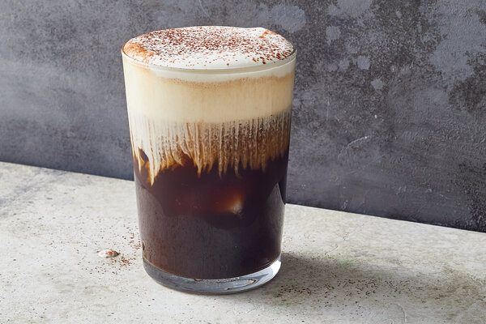

Iced Einspänner
Einspänner, in German, is either a one-horse carriage or a hot espresso topped with cool whipped cream.
Einspänner, in German, is either a one-horse carriage or a hot espresso topped with cool whipped cream. The temperature contrast in the Viennese coffeehouse classic is a delight, to be sure, but this iced variation tastes refreshing in warm weather. It’s sweet, bitter and a little savory all at once, like a tiramisù in beverage form. The salted, sugared cream should float atop the cold coffee without collapsing into it, creating two distinct layers: one dark and weighty like a horseshoe, and the other light as a feather.